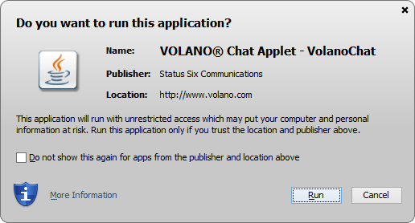
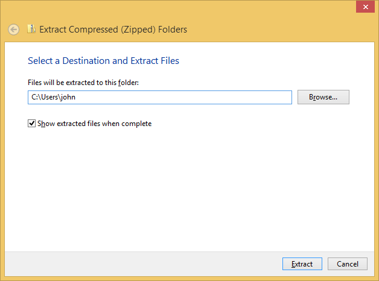
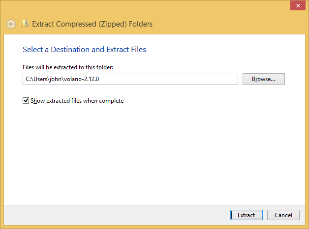

VOLANO Chat Server Version 2.13
- Downloadable Packages
- Changes in Version 2.13
- Changes to Your HTML
- Installing the Full Version
- Applying the Upgrade
Downloadable Packages
Download a free trial version of the VOLANO chat software from the links below. The contents of the .zip and .tar.gz archive files below are identical except for the newline characters of the text files. The .zip archives contain text files with end-of-line markers for Windows systems (CR+LF), while the .tar.gz archives contain text files with end-of-line markers for Unix-like systems (LF).
Trial Full Version
- volano-2.13.0-localhost.zip
- the trial full version 2.13 package for Microsoft Windows operating systems.
- volano-2.13.0-localhost.tar.gz
- the trial full version 2.13 package for Unix-like operating systems such as FreeBSD, Linux, Mac OS X, or Solaris.
Trial Upgrade
- volano-upgrade-2.13.0-localhost.zip
- the upgrade to trial version 2.13 from version 2.12 for Microsoft Windows operating systems.
- volano-upgrade-2.13.0-localhost.tar.gz
- the upgrade to trial version 2.13 from version 2.12 for Unix-like operating systems such as FreeBSD, Linux, Mac OS X, or Solaris.
MD5 Checksums
- md5sum-2.13.0-localhost.txt
- the MD5 message digests for verifying the downloaded files.
Note: The links above are trial versions of the software that allow applet connections only to the local host computer (localhost or ip6-localhost).
Changes in Version 2.13
Version 2.13 includes the following changes:
-
This update of the VOLANO chat server no longer requires a license key. Instead of a server license key, version 2.13 uses the Codebase attribute of the Java archive file manifests to restrict the distribution of the VOLANO applets by host name or domain name. With this update, you no longer need a new license key when your server IP address changes after simply moving the VOLANO chat server from one host computer to another.
Note that you can also provide a list which restricts the Web pages that can embed the VOLANO applets from your server, or you can leave the server open and allow any Web site to embed your applets on their pages.
-
As with the previous version 2.12, the VOLANO chat applets require Java Plug-in Version 7 or later to be installed on your visitors' computers, available for download at www.java.com.
-
The VOLANO applets require one permission outside of the normal Java Plug-in sandbox to run on the Java 8 Plug-in. Specifically, they require a permission called SocketPermission to make the network socket connection back to the chat server.
Because Java applets are unable to request specific permissions, the applets must request all-permissions to function on the Java 8 Plug-in. The Java security prompt now states, "This application will run with unrestricted access which may put your computer and personal information at risk." A sample prompt is shown below.
Sample Java Security Prompt

-
The sizes of the signed applets are shown below in kilobytes for each of the three Java archive formats.
Applets .jar (kB) .jar.gz (kB) .jar.pack.gz (kB) VolanoChat 101 80 41 MyVolanoChat 91 72 38 WebVolanoChat 72 56 31
Changes to Your HTML
Make the following changes to all of your HTML pages containing a VOLANO chat applet, such as the VolanoChat, MyVolanoChat, or WebVolanoChat applet.
-
If you added the permissions parameter with the value sandbox to the applet elements on your Web pages for VOLANO version 2.12, you must remove it for VOLANO version 2.13. The permissions parameter value conflicts with the Permissions attribute value of the VOLANO 2.13 applet archive files.
<param name="permissions" value="sandbox">If you leave that parameter and value, you will get the following error when loading the VOLANO version 2.13 applets:
SecurityException attempted to open sandboxed jar http://www.example.com/volano/COM/volano/VolanoChat.jar as a Trusted-Library
The VOLANO version 2.13 applets will work with either the Java 7 or Java 8 Plug-ins when the permissions parameter is removed from the applet elements.
-
You can also remove the obsolete scriptable and cabbase parameters from the applet HTML elements on your pages. For example, the VolanoChat applet can have just the following attributes and parameters:
<applet codebase="http://www.example.com/vcclient" archive="COM/volano/VolanoChat.jar" code="COM.volano.VolanoChat" width="500" height="60"> <param name="scriptable" value="false"> <param name="cabbase" value="COM/volano/VolanoChat.cab"> <param name="group" value="Chat Room Name"> <param name="text" value="english.txt"> </applet> -
You should provide a notice to your visitors that the VOLANO applets require the Java Plug-in Version 7 or later to run, available from www.java.com.
When the applets run on earlier versions of the Java Plug-in, visitors will see only the message, "Error. Click for details" in the space where the applet should appear. If they click for details, the Java Console opens to display the rather unhelpful message:
java.lang.UnsupportedClassVersionError: COM/volano/VolanoChat : Unsupported major.minor version 51.0The Java Plug-in Version 7 runs on any operating system at the following versions or later (shown below with their release date):
- Windows XP Service Pack 3 or any later version of Windows (2008-05-06)
- Ubuntu Linux 10.04 or any later equivalent version of Linux (2010-04-29)
- Mac OS X 10.7.3 (Lion) or any later version of Mac OS X (2012-02-01)
Installing the Full Version
Installing and running the full version of the VOLANO chat software involves these steps:
- Download and unpack the archive file.
- Start the VOLANO chat server.
- Connect with the applet.
Follow the steps below depending on whether you are installing the VOLANO chat server on a Unix-like system or a Windows system.
Unix-like Systems
To install the VOLANO chat software on a Unix-like system such as FreeBSD, Linux, Mac OS X, or Solaris:
-
Download the volano-2.13.0-localhost.tar.gz file and unpack it with the command:
tar -xf volano-2.13.0-localhost.tar.gz
-
Change to the VOLANO chat server directory and start the server with the commands:
cd volano-2.13.0-localhost ./startup.sh
-
Go to the address http://localhost:8080/vcclient/ on the same machine running the VOLANO chat server to connect to the server with the VOLANO chat applets.
Windows Systems
To install the VOLANO chat software on a Windows system:
-
Download the volano-2.13.0-localhost.zip file. Right-click the file and select Extract All... from the context menu. Follow the instructions and select the folder where you want the
volano-2.13.0-localhostdirectory to be placed, such as the home folder shown below for the user john:
-
Open the Command Prompt. Change to the VOLANO chat server directory and start the server with the commands:
cd volano-2.13.0-localhost startup
See the documentation for details about starting the VOLANO chat server as a Windows Service to avoid the Command Prompt altogether.
-
Go to the address http://localhost:8080/vcclient/ on the same machine running the VOLANO chat server to connect to the server with the VOLANO chat applets.
Applying the Upgrade
Applying the upgrade to an existing VOLANO chat server version 2.12 installation involves these steps:
- Stop the VOLANO chat server.
- Save a backup copy of the version 2.12 code.
- Download and unpack the archive file.
- Start the VOLANO chat server.
- Connect with the applet.
Follow the steps below depending on whether you are applying the upgrade on a Unix-like system or a Windows system.
Unix-like Systems
To apply the upgrade to VOLANO chat server version 2.12 on a Unix-like system such as FreeBSD, Linux, Mac OS X, or Solaris:
-
Stop the VOLANO chat server.
-
Save a backup copy of the version 2.12 code for recovery purposes by renaming the following two JAR files and directory:
Server JAR file: volano-2.12.0/lib/volano-chat-server.jar ==> volano-chat-server.jar.old Servlet JAR file: volano-2.12.0/webapps/ROOT/WEB-INF/lib/volano-chat-servlets.jar ==> volano-chat-servlets.jar.old Applet directory: volano-2.12.0/webapps/ROOT/vcclient/COM/volano ==> volano.old -
Download the volano-upgrade-2.13.0-localhost.tar.gz file and unpack it into the existing VOLANO chat server version 2.12 installation directory.
cd volano-2.12.0 tar -xmf volano-upgrade-2.13.0-localhost.tar.gz
The
-moption updates the modification times of the extracted files to the current time so Web site visitors will be sure to pick up the new applet files instead of using copies of the old ones in their cache.The upgrade archive installs the following files into the current directory where you unpack it:
lib/volano-chat-server.jar webapps/ROOT/WEB-INF/lib/volano-chat-servlets.jar webapps/ROOT/vcclient/COM/volano/Agent.jar webapps/ROOT/vcclient/COM/volano/Agent.jar.gz webapps/ROOT/vcclient/COM/volano/Agent.jar.pack.gz webapps/ROOT/vcclient/COM/volano/MyVolanoChat.jar webapps/ROOT/vcclient/COM/volano/MyVolanoChat.jar.gz webapps/ROOT/vcclient/COM/volano/MyVolanoChat.jar.pack.gz webapps/ROOT/vcclient/COM/volano/VolanoChat.jar webapps/ROOT/vcclient/COM/volano/VolanoChat.jar.gz webapps/ROOT/vcclient/COM/volano/VolanoChat.jar.pack.gz webapps/ROOT/vcclient/COM/volano/WebVolanoChat.jar webapps/ROOT/vcclient/COM/volano/WebVolanoChat.jar.gz webapps/ROOT/vcclient/COM/volano/WebVolanoChat.jar.pack.gz
Note: If you moved the public
vcclientdirectory to your Web server root directory, you'll need to copy the new applet files there. -
Change to the VOLANO chat server directory and start the server with the commands:
cd volano-2.12.0 ./startup.sh
You should see messages like the following:
java version "1.7.0_55" OpenJDK Runtime Environment (IcedTea 2.4.7) (7u55-2.4.7-1ubuntu1) OpenJDK 64-Bit Server VM (build 24.51-b03, mixed mode) VOLANO(TM) Chat Server Version 2.13.0 Copyright (c) 1996-2014 Status Six Communications Loading server properties from "/home/volano/volano-2.12.0/conf/properties.txt". www.example.com:8000 (192.168.1.1:8000) VolanoChatPro - unlimited connections. Apache Tomcat/4.1.40
Note the updated VOLANO Chat Server Version number of 2.13.0.
-
Go to the address http://localhost:8080/vcclient/ on the same machine running the VOLANO chat server to connect to the server with the VOLANO chat applets.
Windows Systems
To apply the upgrade to VOLANO chat server version 2.12 on a Windows system:
-
Stop the VOLANO chat server.
-
Save a backup copy of the version 2.12 code for recovery purposes by renaming the following two JAR files and directory:
Server JAR file: volano-2.12.0\lib\volano-chat-server.jar ==> volano-chat-server.jar.old Servlet JAR file: volano-2.12.0\webapps\ROOT\WEB-INF\lib\volano-chat-servlets.jar ==> volano-chat-servlets.jar.old Applet directory: volano-2.12.0\webapps\ROOT\vcclient\COM\volano ==> volano.old -
Download the volano-upgrade-2.13.0-localhost.zip file. Right-click the file and select Extract All... from the context menu. Follow the instructions and select the VOLANO chat server version 2.12 folder where you want the upgrade applied, as shown in the example below for the user john.

If you use a command-line unzip program to extract the files instead of the Windows Extraction Wizard, add the
-DDcommand option. The-DDoption of many unzip programs suppresses the timestamp restoration for all extracted files and directories, setting the timestamps to the current time. With current timestamps, your Web site visitors will be sure to pick up the new applet files instead of using copies of the old ones in their cache.The upgrade archive installs the following files into the folder where you unpack it:
lib\volano-chat-server.jar webapps\ROOT\WEB-INF\lib\volano-chat-servlets.jar webapps\ROOT\vcclient\COM\volano\Agent.jar webapps\ROOT\vcclient\COM\volano\Agent.jar.gz webapps\ROOT\vcclient\COM\volano\Agent.jar.pack.gz webapps\ROOT\vcclient\COM\volano\MyVolanoChat.jar webapps\ROOT\vcclient\COM\volano\MyVolanoChat.jar.gz webapps\ROOT\vcclient\COM\volano\MyVolanoChat.jar.pack.gz webapps\ROOT\vcclient\COM\volano\VolanoChat.jar webapps\ROOT\vcclient\COM\volano\VolanoChat.jar.gz webapps\ROOT\vcclient\COM\volano\VolanoChat.jar.pack.gz webapps\ROOT\vcclient\COM\volano\WebVolanoChat.jar webapps\ROOT\vcclient\COM\volano\WebVolanoChat.jar.gz webapps\ROOT\vcclient\COM\volano\WebVolanoChat.jar.pack.gz
Note: If you moved the public
vcclientdirectory to your Web server root directory, you'll need to copy the new applet files there. -
Open the Command Prompt. Change to the VOLANO chat server directory and start the server with the commands:
cd volano-2.12.0 startup
You should see messages like the following:
java version "1.7.0_60" Java(TM) SE Runtime Environment (build 1.7.0_60-b19) Java HotSpot(TM) Client VM (build 24.60-b09, mixed mode, sharing) VOLANO(TM) Chat Server Version 2.13.0 Copyright (c) 1996-2014 Status Six Communications Loading server properties from "C:\Users\volano\volano-2.12.0\conf\properties.txt". www.example.com:8000 (192.168.1.1:8000) VolanoChatPro - unlimited connections. Apache Tomcat/4.1.40
Note the updated VOLANO Chat Server Version number of 2.13.0.
-
Go to the address http://localhost:8080/vcclient/ on the same machine running the VOLANO chat server to connect to the server with the VOLANO chat applets.